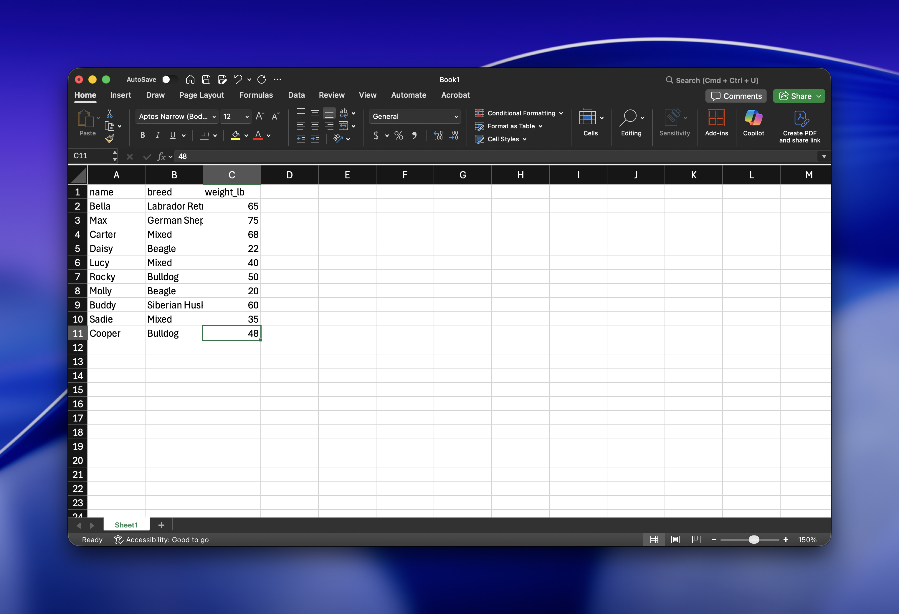

Section 1.3: Data Entry in Excel
Working in Excel
There are two basic ways of working with data in Excel. The first is data entry, and the second is working with formulas. Data entry is the process of recording the values of a dataset into an Excel workbook. Working with formulas allows us to perform mathematical manipulations on existing data.
Data Entry In Excel
When performing data entry in Excel, we want to adhere to the tidy data principles.
TidydataTidy Data Principles
A data set is tidy1 if
- Each variable is a column; each column is a variable.
- Each observation is a row; each row is an observation.
- Each value is a cell; each cell is a value.

Example 1.3.1.
The table below is an example of tidy data.
| Name | Breed | Weight (lbs) |
|---|---|---|
| Bella | Labrador Retriever | 65 |
| Max | German Shepherd | 75 |
| Carter | Mixed | 68 |
| Daisy | Beagle | 22 |
| Lucy | Mixed | 40 |
| Rocky | Bulldog | 50 |
| Molly | Beagle | 20 |
| Buddy | Siberian Husky | 60 |
| Sadie | Mixed | 35 |
| Cooper | Bulldog | 48 |
ExampleExample 1.3.2.
The table is an example of untidy data.
| Variable | Dog 1 | Dog 2 | Dog 3 | Dog 4 | Dog 5 | Dog 6 | Dog 7 | Dog 8 | Dog 9 | Dog 10 |
|---|---|---|---|---|---|---|---|---|---|---|
| Name | Bella | Max | Carter | Daisy | Lucy | Rocky | Molly | Buddy | Sadie | Cooper |
| Breed | Labrador Retriever | German Shepherd | Mixed | Beagle | Mixed | Bulldog | Beagle | Siberian Husky | Mixed | Bulldog |
| Weight (lbs) | 65 | 75 | 68 | 22 | 40 | 50 | 20 | 60 | 35 | 48 |
ConventionConvention
When performing data entry in a spreadsheet app, we follow these conventions:
- Row 1 is reserved for variable names.
- Always use lowercase letters for variable names.
- Always use
_(underscore), not spaces, as the word separator.
ExampleExample 1.3.3.
Enter the table values from Example 1.3.1. into Excel.
Your data should look like below.

Footnotes
In a relational database, tidy data is known as the first normal form.↩︎